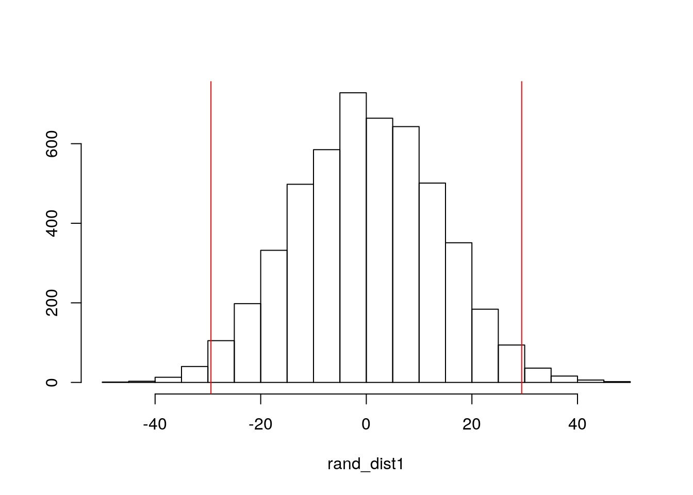
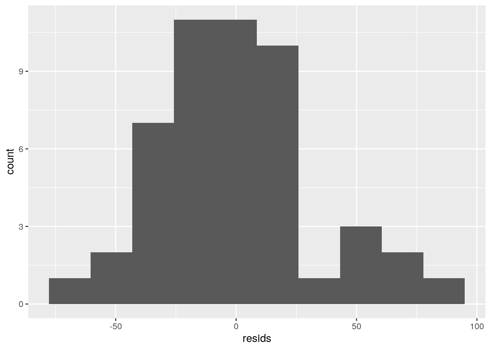

In this project, all new data used came from the Center for Disease Control. I combined 5 datasets, one of these being a partial set from project one. This set included region classifications and percentages of each state's population that were classified as "obese." That is, having a BMI of 30 or greater. Other sets included the percentages of each state that smoke, have angina or coronary heart disease, or have COPD. Finally, the fifth dataset was from the CDC's COVID-19 tracking data, current as of November 20th, 2020. I parsed down the original set until it contained only the case rate per 100,000 people and the death rate per 100,000 people for each state. There ended up being a total of 49 observations: one per state, excluding New Jersey because of insufficient data.
Here, I tidy and combine the datasets:
C19Data <- read_csv("C19Data.csv")
C19 <- C19Data %>% select(1, 6, 11) %>% slice(1:3, 5:11, 13,
15:28, 30:38, 41:44, 47, 49:54, 56:60) %>% rename(State = "State/Territory") %>%
add_row(State = "New York", `Case Rate per 100000` = 3012,
`Death Rate per 100000` = 173) %>% arrange(State)
region <- read_csv("region.csv") %>% select(1, 3, 7) %>% rename(State = "LocationDesc")
heart <- read_csv("hearthealth.csv")
smoker <- read_csv("smoker.csv")
COPD <- read_csv("COPD.csv")
proj2 <- full_join(C19, region, by = "State") %>% full_join(.,
heart, by = "State") %>% full_join(., smoker, by = "State") %>%
full_join(., COPD, by = "State") %>% na.omit %>% rename(CaseRate = "Case Rate per 100000") %>%
rename(DeathRate = "Death Rate per 100000") %>% rename(Obese = "Obese (BMI 30.0 - 99.8)")In the chunk above, the C19 dataset required the largest amount of adjusting. This mainly consisted of cutting out any non-state entry. However, I also had to manually create the row for the "New York" rates, as the original dataset included "New York" and "New York City" in separate observations. I did this by procuring the population data used by the CDC to create the rate estimates (U.S. Census Bureau, 2018 American Community Survey 1-year estimates) and combining the total cases/total deaths data for the city and state, before reformatting them back into the rate. I did this several times with various state data to ensure that I rounded correctly and could accurately produce matching data.
Here is a preview of the finished dataset:
head(proj2)## # A tibble: 6 x 8
## State CaseRate DeathRate Obese Region HeartDisease PercentSmoker COPD
## <chr> <dbl> <dbl> <dbl> <chr> <dbl> <dbl> <dbl>
## 1 Alabama 4672 70 36.1 South 5.5 20.3 9.9
## 2 Alaska 3440 13 30.5 West 2.1 17.4 4.6
## 3 Arizona 4067 89 31.4 West 3.9 14.9 6.7
## 4 Arkansas 4709 77 37.4 South 6.1 20.2 10.5
## 5 California 2711 46 26.2 West 2.7 10 4.4
## 6 Colorado 3311 48 23.8 West 2.3 13.5 4.5# MANOVA
man1 <- manova(cbind(PercentSmoker, HeartDisease, COPD, Obese,
DeathRate, CaseRate) ~ Region, data = proj2)
summary(man1)## Df Pillai approx F num Df den Df Pr(>F)
## Region 3 1.2461 4.9734 18 126 2.341e-08 ***
## Residuals 45
## ---
## Signif. codes: 0 '***' 0.001 '**' 0.01 '*' 0.05 '.' 0.1 ' ' 1# Univariate ANOVAs
summary.aov(man1)## Response PercentSmoker :
## Df Sum Sq Mean Sq F value Pr(>F)
## Region 3 155.19 51.729 6.4053 0.001045 **
## Residuals 45 363.42 8.076
## ---
## Signif. codes: 0 '***' 0.001 '**' 0.01 '*' 0.05 '.' 0.1 ' ' 1
##
## Response HeartDisease :
## Df Sum Sq Mean Sq F value Pr(>F)
## Region 3 18.403 6.1344 8.684 0.0001174 ***
## Residuals 45 31.788 0.7064
## ---
## Signif. codes: 0 '***' 0.001 '**' 0.01 '*' 0.05 '.' 0.1 ' ' 1
##
## Response COPD :
## Df Sum Sq Mean Sq F value Pr(>F)
## Region 3 67.987 22.6622 8.9178 9.486e-05 ***
## Residuals 45 114.356 2.5412
## ---
## Signif. codes: 0 '***' 0.001 '**' 0.01 '*' 0.05 '.' 0.1 ' ' 1
##
## Response Obese :
## Df Sum Sq Mean Sq F value Pr(>F)
## Region 3 397.99 132.662 18.938 4.342e-08 ***
## Residuals 45 315.22 7.005
## ---
## Signif. codes: 0 '***' 0.001 '**' 0.01 '*' 0.05 '.' 0.1 ' ' 1
##
## Response DeathRate :
## Df Sum Sq Mean Sq F value Pr(>F)
## Region 3 12391 4130.5 3.6215 0.02 *
## Residuals 45 51324 1140.5
## ---
## Signif. codes: 0 '***' 0.001 '**' 0.01 '*' 0.05 '.' 0.1 ' ' 1
##
## Response CaseRate :
## Df Sum Sq Mean Sq F value Pr(>F)
## Region 3 49564398 16521466 8.428 0.0001487 ***
## Residuals 45 88213687 1960304
## ---
## Signif. codes: 0 '***' 0.001 '**' 0.01 '*' 0.05 '.' 0.1 ' ' 1# Pairwise t-tests
pairwise.t.test(proj2$PercentSmoker, proj2$Region, p.adj = "none")##
## Pairwise comparisons using t tests with pooled SD
##
## data: proj2$PercentSmoker and proj2$Region
##
## Midwest Northeast South
## Northeast 0.05071 - -
## South 0.26417 0.00321 -
## West 0.01523 0.83572 0.00036
##
## P value adjustment method: nonepairwise.t.test(proj2$HeartDisease, proj2$Region, p.adj = "none")##
## Pairwise comparisons using t tests with pooled SD
##
## data: proj2$HeartDisease and proj2$Region
##
## Midwest Northeast South
## Northeast 0.914 - -
## South 0.012 0.020 -
## West 0.031 0.067 7.3e-06
##
## P value adjustment method: nonepairwise.t.test(proj2$COPD, proj2$Region, p.adj = "none")##
## Pairwise comparisons using t tests with pooled SD
##
## data: proj2$COPD and proj2$Region
##
## Midwest Northeast South
## Northeast 0.8287 - -
## South 0.0036 0.0051 -
## West 0.0904 0.1932 9.1e-06
##
## P value adjustment method: nonepairwise.t.test(proj2$Obese, proj2$Region, p.adj = "none")##
## Pairwise comparisons using t tests with pooled SD
##
## data: proj2$Obese and proj2$Region
##
## Midwest Northeast South
## Northeast 0.00038 - -
## South 0.26984 8.1e-06 -
## West 9.9e-06 0.59902 6.0e-08
##
## P value adjustment method: nonepairwise.t.test(proj2$DeathRate, proj2$Region, p.adj = "none")##
## Pairwise comparisons using t tests with pooled SD
##
## data: proj2$DeathRate and proj2$Region
##
## Midwest Northeast South
## Northeast 0.1894 - -
## South 0.8371 0.2279 -
## West 0.0539 0.0032 0.0242
##
## P value adjustment method: nonepairwise.t.test(proj2$CaseRate, proj2$Region, p.adj = "none")##
## Pairwise comparisons using t tests with pooled SD
##
## data: proj2$CaseRate and proj2$Region
##
## Midwest Northeast South
## Northeast 1.4e-05 - -
## South 0.0061 0.0122 -
## West 0.0020 0.0478 0.5650
##
## P value adjustment method: none# Probability of a type 1 error
1 - ((0.95)^43)## [1] 0.8898169# Bonferroni correction
0.05/43## [1] 0.001162791# Assumptions
group <- proj2$Region
DVs <- proj2 %>% select(PercentSmoker, HeartDisease, COPD, Obese,
DeathRate, CaseRate)
# Test multivariate normality for each group (null:
# assumption met)
sapply(split(DVs, group), mshapiro_test)## Midwest Northeast South West
## statistic 0.6820217 0.4897634 0.6860697 0.5330517
## p.value 0.0005686926 7.776524e-06 0.0001190033 1.831074e-05This MANOVA analyzed whether any of the risk factors or COVID-19 rates differed by geographic region of the country. The MANOVA was significant (p-value: 2.341e-08), meaning at least one of the variables differed by region. This led me to run univariate ANOVAs for each variable. Each of these were also significant, so I ran post-hoc t tests to examine which regions were actually showing the differences.
All in all, I ran 43 tests. The probability of a type 1 error was 0.89. The adjusted significance level (bonferroni correction) was 0.0012. The differences by region that remained signficant are as follows: - PercentSmoker, HeartDisease, and COPD differed only between the South and the West. - Obesity differed between the South and the West, the Northeast and the Midwest, the Midwest and the West, and the Northeast and the South. - DeathRate did not differ significantly by region. - CaseRate differed between the Midwest and the Northeast.
In examining the assumptions for the MANOVA, I found that the test for multivariate normality found that the assumption was not met, as every p-value in the test was significant.
rand_dist1 <- vector()
for (i in 1:5000) {
new <- data.frame(DeathRate = sample(proj2$DeathRate), Region = proj2$Region)
rand_dist1[i] <- mean(new[new$Region == "South", ]$DeathRate) -
mean(new[new$Region == "West", ]$DeathRate)
}
proj2 %>% group_by(Region) %>% filter(Region == "South" | Region ==
"West") %>% summarize(means = mean(DeathRate)) %>% summarize(mean_diff = diff(means))## # A tibble: 1 x 1
## mean_diff
## <dbl>
## 1 -29.4{
hist(rand_dist1, main = "", ylab = "")
abline(v = c(-29.42308, 29.42308), col = "red")
}
mean(rand_dist1 > 29.42308 | rand_dist1 < -29.42308)## [1] 0.0268This randomization test has a null hypothesis that there is no mean difference for death rate per 100,000 between the South and the West that is not due to chance. The alternative hypothesis is that there is a mean difference not due to chance.
The probability of observing a mean difference as extreme as 29.42 under a "randomization distribution" is 0.025. This means we can reject the null hypothesis.
The histogram shows a null distribution and where the mean difference I calculated falls. These red lines are the mean differences that have a probability of 0.025 of occuring in a random distribution.
# Mean centering:
proj2a <- proj2
proj2a$COPD_c <- (proj2a$COPD - mean(proj2a$COPD, na.rm = T))
proj2a$Heart_c <- (proj2a$HeartDisease - mean(proj2a$HeartDisease,
na.rm = T))
# Linear Regression
fit1 <- lm(DeathRate ~ Heart_c * COPD_c, data = proj2a)
summary(fit1)##
## Call:
## lm(formula = DeathRate ~ Heart_c * COPD_c, data = proj2a)
##
## Residuals:
## Min 1Q Median 3Q Max
## -64.696 -20.621 -1.797 15.896 90.747
##
## Coefficients:
## Estimate Std. Error t value Pr(>|t|)
## (Intercept) 73.975 5.966 12.399 4.1e-16 ***
## Heart_c 29.949 13.717 2.183 0.0343 *
## COPD_c -11.290 7.024 -1.607 0.1150
## Heart_c:COPD_c -4.407 1.851 -2.381 0.0215 *
## ---
## Signif. codes: 0 '***' 0.001 '**' 0.01 '*' 0.05 '.' 0.1 ' ' 1
##
## Residual standard error: 34.48 on 45 degrees of freedom
## Multiple R-squared: 0.1602, Adjusted R-squared: 0.1042
## F-statistic: 2.862 on 3 and 45 DF, p-value: 0.0472# Modeling
interact_plot(fit1, pred = Heart_c, modx = COPD_c)# Assumptions(LINE)
ggplot(proj2a, aes(Heart_c, DeathRate)) + geom_point()resids <- fit1$residuals
ggplot() + geom_histogram(aes(resids), bins = 10)
shapiro.test(resids)##
## Shapiro-Wilk normality test
##
## data: resids
## W = 0.96133, p-value = 0.1075fitted <- fit1$fitted.values
ggplot() + geom_point(aes(fitted, resids))bptest(fit1)##
## studentized Breusch-Pagan test
##
## data: fit1
## BP = 5.5076, df = 3, p-value = 0.1382# Robust Standard Errors
coeftest(fit1, vcov = vcovHC(fit1))##
## t test of coefficients:
##
## Estimate Std. Error t value Pr(>|t|)
## (Intercept) 73.9748 6.1728 11.9840 1.336e-15 ***
## Heart_c 29.9490 13.5597 2.2087 0.0323318 *
## COPD_c -11.2904 7.5613 -1.4932 0.1423668
## Heart_c:COPD_c -4.4075 1.0672 -4.1299 0.0001553 ***
## ---
## Signif. codes: 0 '***' 0.001 '**' 0.01 '*' 0.05 '.' 0.1 ' ' 1In this linear regression, I used the percentage of the population with heart disease and the percentage with COPD to predict the COVID-19 death rate per 100,000 people. After running the regression, I found the intercept to mean that, for a state with a population that has the average percentage of citizens with heart disease and COPD, the COVID-19 deate rate per 100,000 will be approx. 74. For the heart disease variable, I found that, controlling for COPD, states show an increase of 29.949 people for every 1-unit increase in HeartDisease on average. For the COPD variable I found that, controlling for HeartDisease, states show a decrease of 11.29 people for every 1-unit increase in COPD on average. The interaction value indicates that a one unit increase in both variables decreases deathrate by 4.4 people. Looking at the adjusted R-squared value, we can see that this model explains 10.42% of the variation in the COVID-19 death rate per 100,000.
The included model holds COPD steady at its mean, +1SD, and -1SD while varying heart disease. It affirms that an increase in both variables shows a decrease in the death rate relative to when COPD is lower.
When examining the assumptions for the regression, I used both graphs and formal tests. Looking at a scatterplot, there is a (very) vague linear relationship between heart disease and death rate that can be seen. The Shapiro-Wilk test says that we fail to reject the null hypothesis of normality (p-value=0.11). Graphs seem to show a little heteroskedasticity, but the Breusch-Pagan test says that we fail to reject the null hypothesis of homoskedasticity (p-value=0.14). Overall, assumptions seem to be mostly met for the linear regression.
Finding robust standard errors only produced very slight differences from the original regression standard errors. No individual standard error went up by more than 0.54, and some even decreased. Because of there was almost no change, the p-values would also not change. Thus, the significant coefficients for this regression are those for the intercept (73.98), for heart disease (29.95), and for the interaction between heart disease and COPD (-4.41).
samp_distn <- replicate(5000, {
boot_dat <- sample_frac(proj2a, replace = T)
fit <- lm(DeathRate ~ Heart_c * COPD_c, data = boot_dat)
coef(fit)
})
samp_distn %>% t %>% as.data.frame %>% summarize_all(sd)## (Intercept) Heart_c COPD_c Heart_c:COPD_c
## 1 6.094971 13.5991 7.307652 1.616015Here I chose to bootstrap standard errors by resampling observations. These standard errors are again only slightly different than the original regression. Because of this, the p-values and all significant values would still remain the same.
# Logistic Regression
proj2 %>% summarize(mean(DeathRate))## # A tibble: 1 x 1
## `mean(DeathRate)`
## <dbl>
## 1 66.0binproj <- proj2 %>% mutate(DeathRateOverMean = ifelse(DeathRate >
65.95918, 1, 0)) %>% select(-3)
deaths <- glm(DeathRateOverMean ~ PercentSmoker + Obese, data = binproj,
family = binomial(link = "logit"))
summary(deaths)##
## Call:
## glm(formula = DeathRateOverMean ~ PercentSmoker + Obese, family = binomial(link = "logit"),
## data = binproj)
##
## Deviance Residuals:
## Min 1Q Median 3Q Max
## -1.5220 -1.0132 -0.6938 1.1739 1.7254
##
## Coefficients:
## Estimate Std. Error z value Pr(>|z|)
## (Intercept) -5.0083 2.8664 -1.747 0.0806 .
## PercentSmoker -0.2105 0.1481 -1.422 0.1552
## Obese 0.2552 0.1331 1.918 0.0551 .
## ---
## Signif. codes: 0 '***' 0.001 '**' 0.01 '*' 0.05 '.' 0.1 ' ' 1
##
## (Dispersion parameter for binomial family taken to be 1)
##
## Null deviance: 67.417 on 48 degrees of freedom
## Residual deviance: 63.246 on 46 degrees of freedom
## AIC: 69.246
##
## Number of Fisher Scoring iterations: 4exp(coef(deaths))## (Intercept) PercentSmoker Obese
## 0.006682288 0.810163431 1.290760192# Classification diagnostics
probs1 <- predict(deaths, type = "response")
class_diag(probs1, binproj$DeathRateOverMean)## acc sens spec ppv f1 auc
## TRUE NaN NaN NaN NaN NaN 0.6767677# Confusion Matrix
table(predict = as.numeric(probs1 > 0.5), truth = binproj$DeathRateOverMean) %>%
addmargins## truth
## predict 0 1 Sum
## 0 19 11 30
## 1 8 11 19
## Sum 27 22 49# Density Plot
binproj1 <- binproj %>% mutate(Death2 = case_when(DeathRateOverMean ==
1 ~ "Yes", DeathRateOverMean == 0 ~ "No"))
binproj1$logit <- predict(deaths, type = "link")
ggplot(binproj1, aes(x = logit, fill = Death2)) + geom_density(alpha = 0.4) +
geom_vline(aes(xintercept = 0), color = "blue", linetype = "dashed",
size = 0.5) + labs(fill = "Death Rate Higher Than Average?")# ROC Curve
ROCplot <- ggplot(deaths) + geom_roc(aes(d = DeathRateOverMean,
m = PercentSmoker + Obese), n.cuts = 0)
ROCplotIn this logistic regression, I used the percentage of the population that were smokers and the percentage that were obese (BMI = 30+) to predict whether or not a state fell over the mean for death rates per 100,000. The predicted odds of the death rate per 100,000 being higher than average when the percentage of smokers and those with a BMI of 30+ are zero are 0.00668. For every one-unit increase in the percentage of the population that smokes, the predicted odds of the death rate being higher than average changes by a factor of 0.81016. For every one-unit increase in the percentage of the population with a BMI of 30+, the predicted odds of the death rate being higher than average increases by a factor of 1.29076.
According to the confusion matrix above, this model is classifying 30 out of 49 states correctly, tending to overpredict the number of states that would fall below the mean death rate. Accuracy for the model was 0.61, sensitivity was 0.5, specificity was 0.7, precision was 0.58, and AUC was 0.68. The ROC plot above showcases this AUC graphically. This means that the probability that a randomly selected state with a death rate higher than average has a higher predicted probability than a randomly selected state with a lower death rate than average is only 0.68, which is pretty poor.
# Logistic Regression
deaths2 <- glm(DeathRateOverMean ~ PercentSmoker + Obese + CaseRate +
Region + HeartDisease + COPD, data = binproj, family = "binomial")
summary(deaths2)##
## Call:
## glm(formula = DeathRateOverMean ~ PercentSmoker + Obese + CaseRate +
## Region + HeartDisease + COPD, family = "binomial", data = binproj)
##
## Deviance Residuals:
## Min 1Q Median 3Q Max
## -1.9088 -0.8088 -0.1410 0.7252 2.3066
##
## Coefficients:
## Estimate Std. Error z value Pr(>|z|)
## (Intercept) -2.1974096 5.7049339 -0.385 0.7001
## PercentSmoker -0.2944521 0.2684848 -1.097 0.2728
## Obese 0.0083699 0.2077453 0.040 0.9679
## CaseRate 0.0009181 0.0003930 2.336 0.0195 *
## RegionNortheast 2.9219818 1.7474115 1.672 0.0945 .
## RegionSouth 1.5913284 1.0845874 1.467 0.1423
## RegionWest -2.0951385 1.5953442 -1.313 0.1891
## HeartDisease -0.3696552 1.2207872 -0.303 0.7620
## COPD 0.5279441 0.7273693 0.726 0.4679
## ---
## Signif. codes: 0 '***' 0.001 '**' 0.01 '*' 0.05 '.' 0.1 ' ' 1
##
## (Dispersion parameter for binomial family taken to be 1)
##
## Null deviance: 67.417 on 48 degrees of freedom
## Residual deviance: 45.183 on 40 degrees of freedom
## AIC: 63.183
##
## Number of Fisher Scoring iterations: 5exp(coef(deaths2))## (Intercept) PercentSmoker Obese CaseRate RegionNortheast
## 0.1110906 0.7449396 1.0084050 1.0009185 18.5780690
## RegionSouth RegionWest HeartDisease COPD
## 4.9102676 0.1230532 0.6909725 1.6954430# In-Sample Classification Diagnostics
probs2 <- predict(deaths2, type = "response")
class_diag(probs2, binproj$DeathRateOverMean)## acc sens spec ppv f1 auc
## TRUE NaN NaN NaN NaN NaN 0.8619529For this regression, I used variables for the percentages of the populations that were smokers, obese, had heart disease, and had COPD. Variables for the COVID-19 case rate per 100,000 and geographical regions were also used. Only the case rate showed any significance (p-value=0.0195). Examining the in-sample classification diagnostics, I found that accuracy for this regression was 0.84, sensitivity was 0.86, specificity was 0.81, percision was 0.83, and AUC was 0.86. Because this model was fed more variables and is very flexible, the AUC is better than the previous model.
# 10-Fold CV and Out of Sample Classification Diagnostics
k = 10
data <- binproj[sample(nrow(binproj)), ]
folds <- cut(seq(1:nrow(binproj)), breaks = k, labels = F)
diags <- NULL
for (i in 1:k) {
train <- data[folds != i, ]
test <- data[folds == i, ]
truth <- test$DeathRateOverMean
fit2 <- glm(DeathRateOverMean ~ PercentSmoker + Obese + CaseRate +
Region + HeartDisease + COPD, data = train, family = "binomial")
probs <- predict(fit2, newdata = test, type = "response")
diags <- rbind(diags, class_diag(probs, truth))
}
summarize_all(diags, mean)## acc sens spec ppv f1 auc
## 1 NaN NaN NaN NaN NaN 0.7After performing a 10-fold cross validation, I computed the out of sample classification diagnostics. Accuracy was 0.7, sensitivity was 0.69, specificity was 0.63, precision was 0.59, and AUC was 0.75. These diagnostics showed a decrease of approximately 0.1-0.16 from the in-sample diagnostics, including in the AUC.
# LASSO
preds <- model.matrix(deaths2)[, -1]
resp <- as.matrix(binproj$DeathRateOverMean)
cv <- cv.glmnet(preds, resp, family = "binomial")
lasso_fit <- glmnet(preds, resp, family = "binomial", lambda = cv$lambda.1se)
coef(lasso_fit)## 9 x 1 sparse Matrix of class "dgCMatrix"
## s0
## (Intercept) 2.202446e-02
## PercentSmoker .
## Obese .
## CaseRate 9.393374e-07
## RegionNortheast .
## RegionSouth .
## RegionWest -9.215674e-01
## HeartDisease .
## COPD .# 10-Fold CV #2
binproj2 <- binproj %>% mutate(West = ifelse(Region == "West",
1, 0))
data2 <- binproj2[sample(nrow(binproj2)), ]
folds2 <- cut(seq(1:nrow(binproj2)), breaks = k, labels = F)
diags <- NULL
for (i in 1:k) {
train <- data2[folds2 != i, ]
test <- data2[folds2 == i, ]
truth <- test$DeathRateOverMean
fit3 <- glm(DeathRateOverMean ~ West, data = train, family = "binomial")
probs <- predict(fit3, newdata = test, type = "response")
diags <- rbind(diags, class_diag(probs, truth))
}
summarize_all(diags, mean)## acc sens spec ppv f1 auc
## 1 NaN NaN NaN NaN NaN 0.75After performing LASSO on the model, the only variable that was retained was RegionWest. I performed a 10-fold cross validation once again and found the accuracy to be 0.68, the sensitivity to be 0.98, the specificity to be 0.42, the precision to be 0.59, and the AUC to be 0.7. This means that narrowing down the variables made the model perform less well at detecting whether a state is above or below the mean death rate.
It seems like, for these data, heightened risk factors were not super predictive in examining COVID-19 death rates. Possible future areas of research could include possible predictors such as state responses to the pandemic and lockdown times. Looking at rates by county instead of state could also produce interesting results.